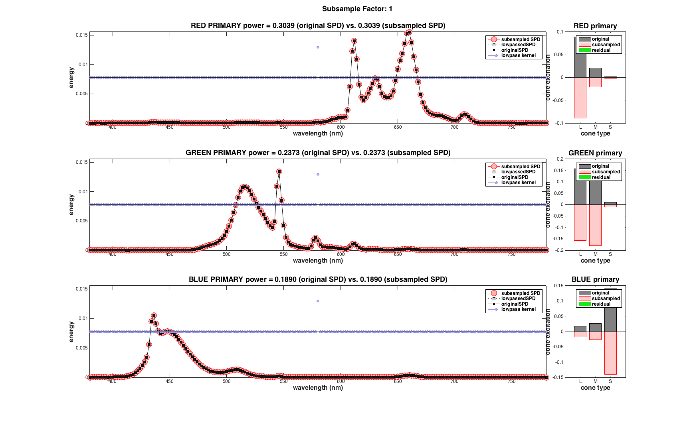
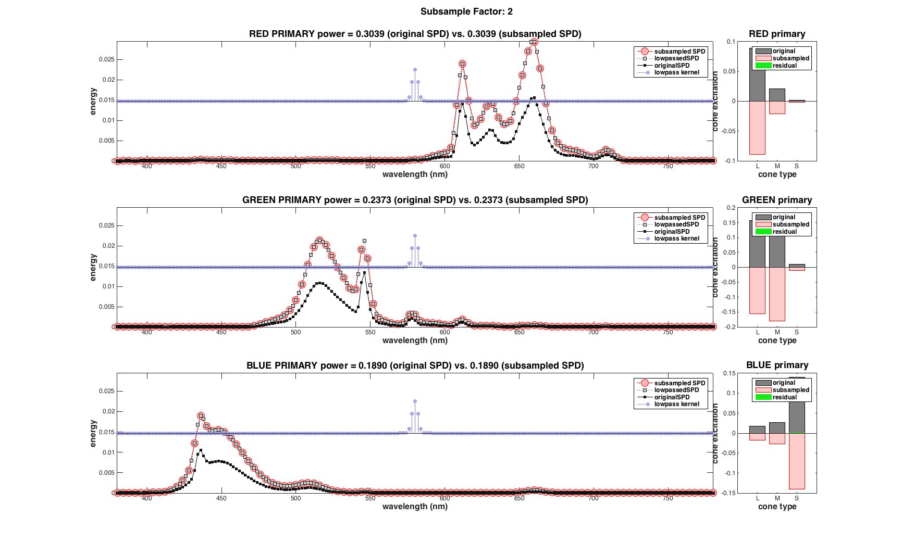
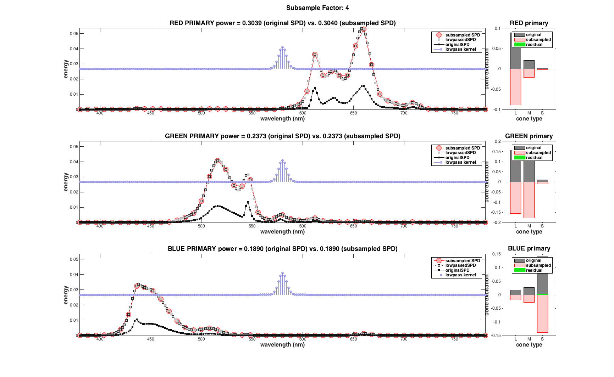
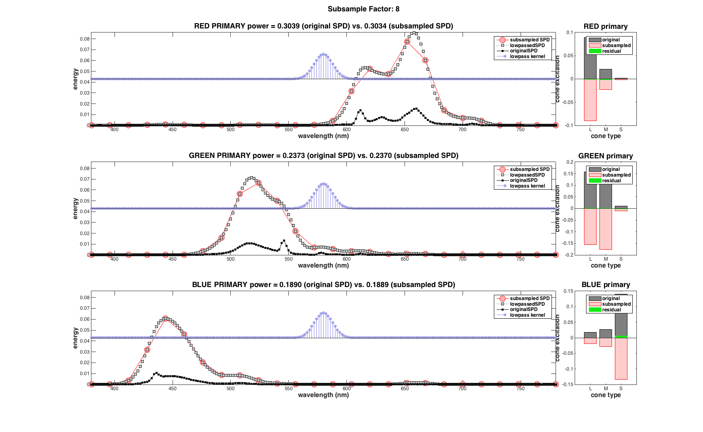
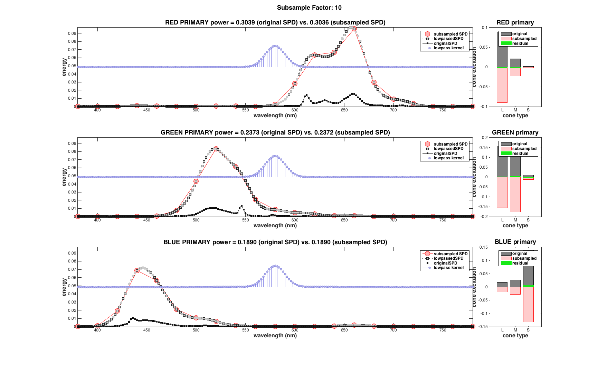
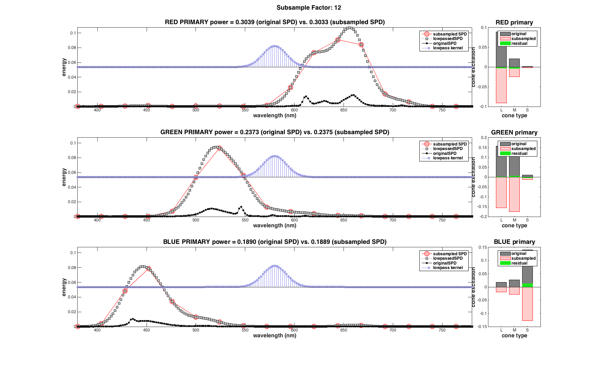
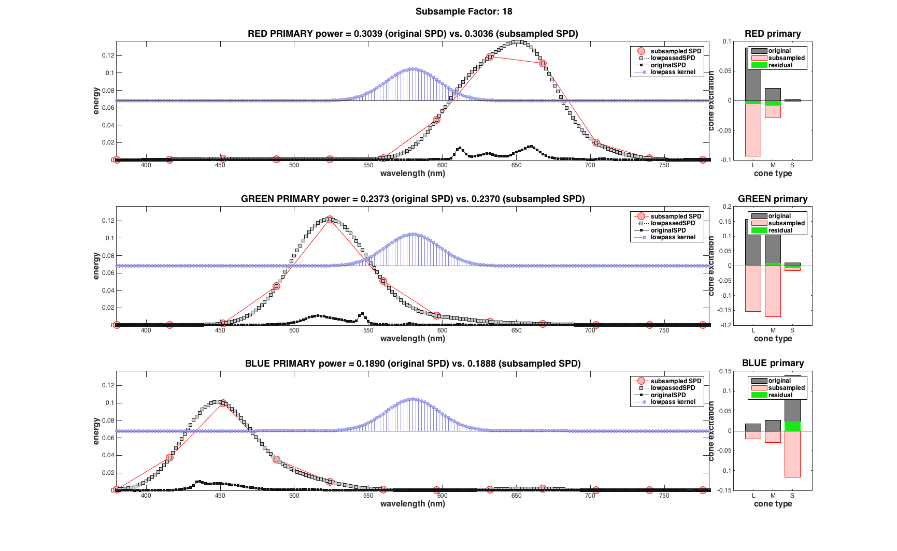
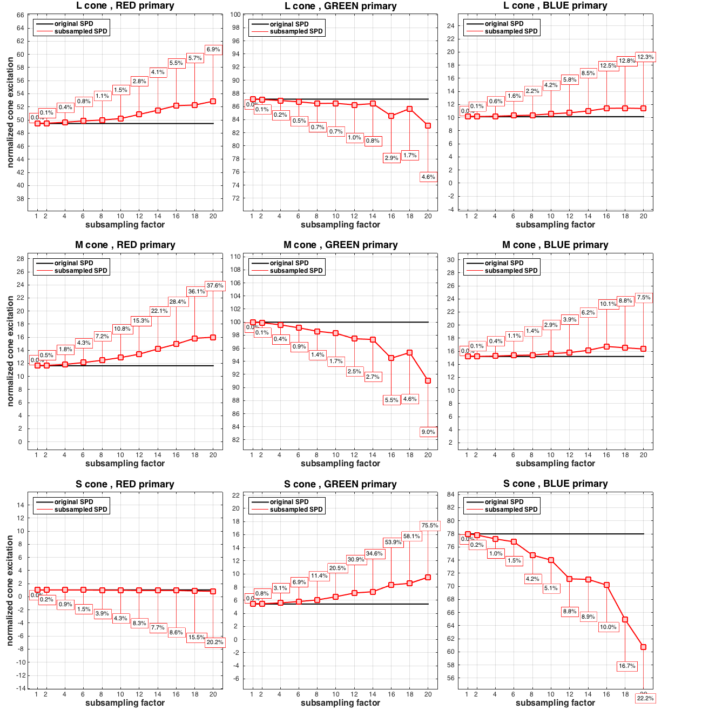

Contents
function varargout = v_SPDSubsampling(varargin)
varargout = UnitTest.runValidationRun(@ValidationFunction, nargout, varargin);
end
Function implementing the isetbio validation code
function ValidationFunction(runTimeParams)
close all
calStructOBJ = loadCalibrationData('StereoLCDBLIllumDiscrim');
calStructOBJ.cal.describe;
wavelengthSampling = SToWls(calStructOBJ.get('S'));
originalSPDs = calStructOBJ.get('P_device');
primaries = {'RED', 'GREEN', 'BLUE'};
coneTypes = {'L', 'M', 'S'};
maintainTotalEnergy = true;
FFTsize = 1024;
subSamplingFactorsTested = [1 2 4 6 8 10 12 14 16 18 20];
for subSamplingFactorIndex = 1:numel(subSamplingFactorsTested)
subSamplingFactor = subSamplingFactorsTested(subSamplingFactorIndex);
subSamplingVector = (1:subSamplingFactor:numel(wavelengthSampling));
subSampledWavelengthSampling = wavelengthSampling(subSamplingVector);
sigma = subSamplingFactor/2;
kernelF = generateGaussianLowPassKernel(subSamplingFactor, sigma, wavelengthSampling, maintainTotalEnergy);
ix = floor(numel(kernelF)/2);
paddedKernelF = zeros(1,FFTsize);
paddedKernelF(FFTsize/2+(-ix:ix)) = kernelF;
lowpassedSPD = zeros(numel(wavelengthSampling), numel(primaries));
subsampledSPD = zeros(numel(subSamplingVector), numel(primaries));
for primaryIndex = 1:numel(primaries)
paddedSPD = zeros(1,FFTsize);
paddedSPD(FFTsize/2+(-ix:ix)) = squeeze(originalSPDs(:,primaryIndex));
FFTkernel = fft(paddedKernelF);
FFTspd = fft(paddedSPD);
tmp = FFTspd .* FFTkernel;
tmp = ifftshift(ifft(tmp));
lowpassedSPD(:,primaryIndex) = tmp(FFTsize/2-1+(-ix:ix));
subsampledSPD(:,primaryIndex) = lowpassedSPD(subSamplingVector,primaryIndex);
end
originalSPDpower = sum(originalSPDs,1);
subSampledSPDpower = sum(subsampledSPD,1);
hFig = figure(subSamplingFactor);
set(hFig, 'Position', [200 200 1731 1064]);
clf;
maxY = max([max(subsampledSPD(:)) max(originalSPDs(:)) max(lowpassedSPD(:))]);
for primaryIndex = 1:numel(primaries)
subplot(3, 7, [1 2 3 4 5 6]+(primaryIndex-1)*7);
hold on;
plot(subSampledWavelengthSampling, subsampledSPD(:,primaryIndex), 'ro-', 'MarkerFaceColor', [1.0 0.7 0.7], 'MarkerSize', 14);
plot(wavelengthSampling, lowpassedSPD(:, primaryIndex), 'ks:', 'MarkerFaceColor', [0.8 0.8 0.8], 'MarkerSize', 8);
plot(wavelengthSampling, originalSPDs(:, primaryIndex), 'ks-', 'MarkerFaceColor', [0.1 0.1 0.1], 'MarkerSize', 6);
hStem = stem(wavelengthSampling, maxY/2 + kernelF*maxY/3, 'Color', [0.5 0.5 0.90], 'LineWidth', 1, 'MarkerFaceColor', [0.7 0.7 0.9]);
hStem.BaseValue = maxY/2;
hold off;
set(gca, 'YLim', [0 maxY], 'XLim', [min(wavelengthSampling) max(wavelengthSampling)]);
h_legend=legend('subsampled SPD', 'lowpassedSPD', 'originalSPD', 'lowpass kernel');
box on;
xlabel('wavelength (nm)'); ylabel('energy');
title(sprintf('%s PRIMARY power = %2.4f (original SPD) vs. %2.4f (subsampled SPD)', primaries{primaryIndex}, originalSPDpower(primaryIndex), subSampledSPDpower(primaryIndex)));
end
load('T_cones_ss2.mat');
originalSpectralSensitivityFunctions = SplineCmf(S_cones_ss2, T_cones_ss2, WlsToS(wavelengthSampling));
subSampledConeSpectralSensitivityFunctions = SplineCmf(S_cones_ss2, T_cones_ss2, WlsToS(subSampledWavelengthSampling));
originalConeExcitation = zeros(3,3);
subSampledConeExcitation = zeros(3,3);
for cone = 1:3
for primaryIndex = 1:3
originalConeExcitation(cone, primaryIndex) = sum(originalSpectralSensitivityFunctions(cone,:) .* (originalSPDs(:, primaryIndex))');
subSampledConeExcitation(cone, primaryIndex) = sum(subSampledConeSpectralSensitivityFunctions(cone,:) .* (subsampledSPD(:, primaryIndex))');
end
end
figure(subSamplingFactor);
for primaryIndex = 1:numel(primaries)
subplot(3, 7, 7+(primaryIndex-1)*7);
bar([1:3], originalConeExcitation(:,primaryIndex), 'EdgeColor', [0 0 0], 'FaceColor', [0.5 0.5 0.5]);
hold on;
bar([1:3], -subSampledConeExcitation(:,primaryIndex), 'EdgeColor', [1 0 0], 'FaceColor', [1.0 0.8 0.8]);
bar([1:3], originalConeExcitation(:,primaryIndex)-subSampledConeExcitation(:,primaryIndex), 'EdgeColor', [0 1 0], 'FaceColor', [0.1 0.9 0.1]);
hold off;
h_legend=legend('original', 'subsampled', 'residual');
xlabel('cone type'); ylabel('cone excitation');
set(gca, 'XTick', [1 2 3], 'XTickLabel', coneTypes);
title(sprintf('%s primary', primaries{primaryIndex}));
end
deltas(subSamplingFactorIndex,:,:) = subSampledConeExcitation;
excitations(subSamplingFactorIndex, :,:) = originalConeExcitation;
suplabel(['Subsample Factor: ' num2str(subSamplingFactor)], 't');
NicePlot.setFontSizes(hFig, 'FontSize', 12);
UnitTest.validationData(['subsamplefactor' num2str(subSamplingFactor)], subSampledConeExcitation);
end
maxAllExcitations = max(excitations(:));
excitations = 100.0*excitations/maxAllExcitations;
deltas = 100.0*deltas/maxAllExcitations;
hFig = figure(100);
set(hFig, 'Position', [100 100 1300 1330]);
clf;
subplotPosVectors = NicePlot.getSubPlotPosVectors(...
'rowsNum', numel(coneTypes), ...
'colsNum', numel(primaries), ...
'widthMargin', 0.03, ...
'heightMargin', 0.06, ...
'leftMargin', 0.04, ...
'bottomMargin', 0.03, ...
'topMargin', 0.01);
for cone = 1:numel(coneTypes)
for channel = 1:numel(primaries)
subplot('Position', subplotPosVectors(cone,channel).v);
subSPD = squeeze(deltas(:,cone,channel));
origSPD = squeeze(excitations(:,cone,channel));
hold on;
plot(subSamplingFactorsTested, origSPD, 'k-', 'LineWidth', 2.0);
errors = 100.0*((subSPD-origSPD)./origSPD);
if (abs(max(errors)) > abs(min(errors)))
dist = 0.7;
else
dist = -0.7;
end
for k = 1:numel(subSamplingFactorsTested)
x = subSamplingFactorsTested(k);
y = subSPD(k)+dist*k;
plot([x x], [subSPD(k) y], 'r-');
text(x-0.7,y+dist/5,sprintf('%3.1f%%', abs(errors(k))), 'Color', 'k', 'FontSize', 11, 'EdgeColor', 'r', 'BackgroundColor', [1 1 1]);
end
plot(subSamplingFactorsTested, subSPD, 'rs-', 'MarkerFaceColor', [1.0 0.8 0.8], 'MarkerSize', 12, 'LineWidth', 2);
hold off
h_legend=legend('original SPD', 'subsampled SPD');
set(h_legend, 'Location', 'northwest');
yTicks = [-50:2:120];
xTicks = subSamplingFactorsTested;
minSPD = min([min(origSPD(:)) min(subSPD(:))]);
maxSPD = max([max(origSPD(:)) max(subSPD(:))]);
offset = 30 - (maxSPD-minSPD);
YLims = [minSPD-offset/2 maxSPD+offset/2];
set(gca, 'XLim', [subSamplingFactorsTested(1)-1 subSamplingFactorsTested(end)+1], 'YLim', YLims, 'YTick', yTicks, 'YTickLabel', yTicks, 'XTick', xTicks, 'XTickLabel', xTicks);
xlabel('subsampling factor');
if (channel == 1)
ylabel('normalized cone excitation');
end
title(sprintf('%s cone , %s primary', coneTypes{cone}, primaries{channel}));
box on
grid on
UnitTest.validationData(sprintf('%scone%sprimary', coneTypes{cone}, primaries{channel}), subSPD);
end
end
NicePlot.setFontSizes(hFig, 'FontSize', 12);
end
function gaussF = generateGaussianLowPassKernel(subSamplingFactor, sigma, samplingAxis, maintainTotalEnergy)
samplingAxis = (0:(numel(samplingAxis)-1))-(numel(samplingAxis)/2)+0.5;
if (subSamplingFactor <= 1)
gaussF = zeros(size(samplingAxis));
gaussF(samplingAxis == 0) = 1;
else
gaussF = exp(-0.5*(samplingAxis/sigma).^2);
if (maintainTotalEnergy)
gain = subSamplingFactor;
else
gain = 1;
end
gaussF = gain * gaussF / sum(gaussF);
end
end
function calStructOBJ = loadCalibrationData(calFile)
dir = fileparts(mfilename('fullpath'));
cal = LoadCalFile(calFile, [], dir);
calStructOBJ = ObjectToHandleCalOrCalStruct(cal);
clear 'cal'
end
       